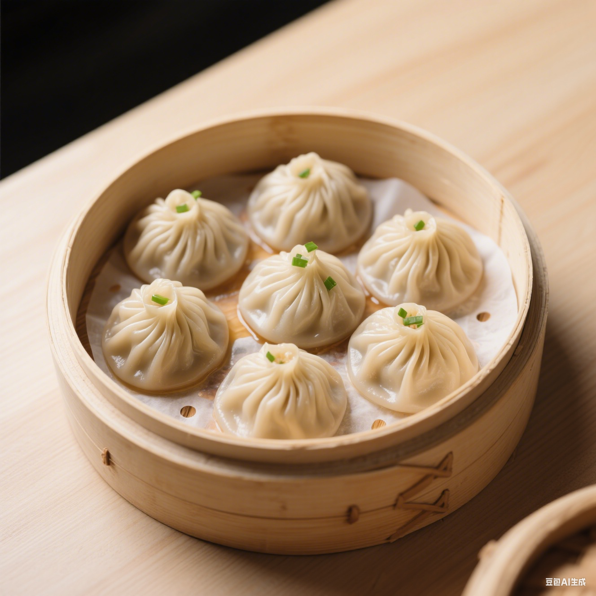
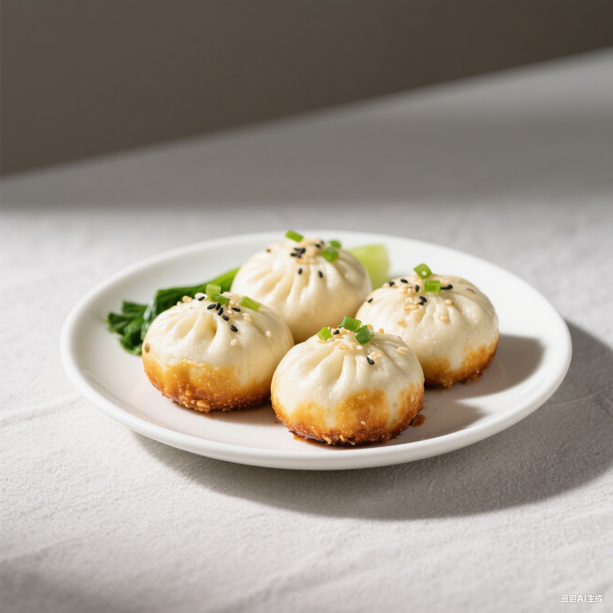
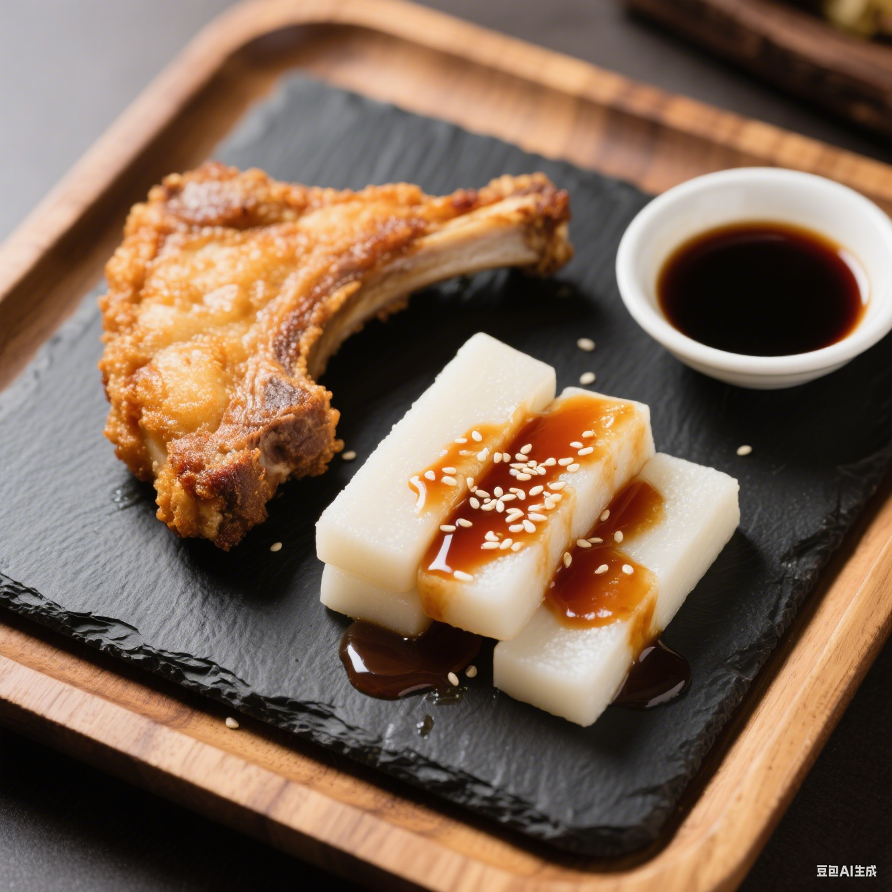
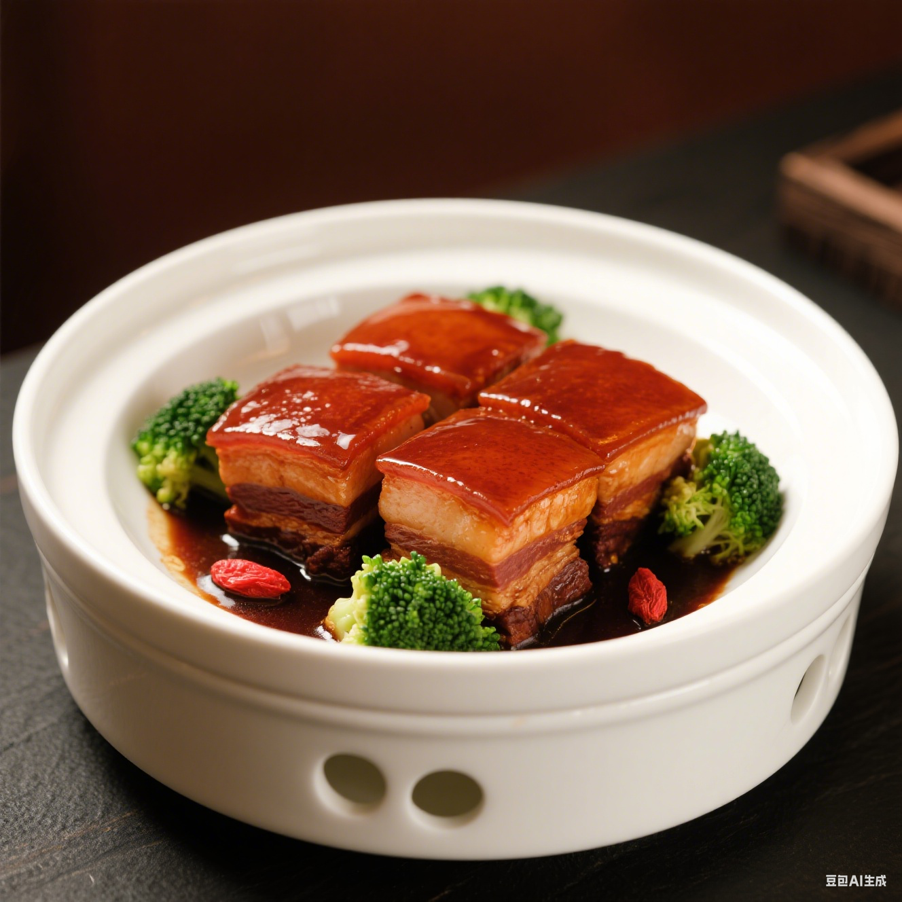

美食

推荐指数：⭐⭐⭐⭐⭐
南翔小笼
皮薄不破、褶皱美观，包裹鲜嫩肉馅与清甜汤汁，鲜香甜交融口感清爽
- 上海
- 28 元 / 笼

推荐指数：⭐⭐⭐⭐
上海生煎包
底部金黄酥脆、顶部撒芝麻葱花，软韧外皮裹着鲜肉汤汁，酥脆软嫩
- 上海
- 16 元 / 份

推荐指数：⭐⭐⭐⭐
排骨年糕
外酥里嫩的炸大排搭配吸满甜面酱的软糯年糕，甜咸适中不粘牙
- 上海
- 22 元 / 份

推荐指数：⭐⭐⭐⭐⭐
本帮红烧肉
色泽红亮、酥烂脱骨，酱甜带鲜不腻，裹满酱汁配饭堪称一绝
- 上海
- 58 元 / 份